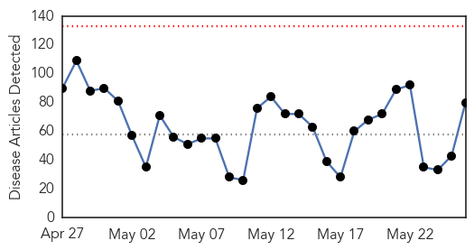
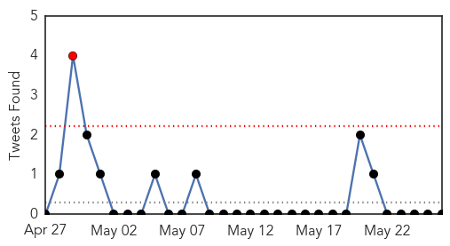
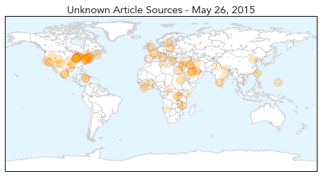
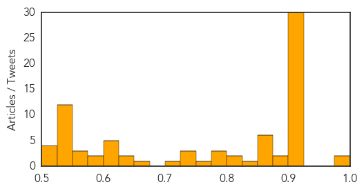

Cholera
30-Day Web Trend
10 alerts, 1 warnings

30-Day Twitter Trend
0 alerts, 0 warnings

Article Locations

Article Confidences

Top Articles:
- 0.994
- Cholera containment measures stall death rate in Tanzania refugee camp
- 0.993
- Cholera crisis in Tanzania improving despite high transmission risk - United Republic of Tanzania
- 0.992
- Tanzania cholera epidemic improving but ignificant challenges still remain UN
- 0.987
- Cholera crisis in Tanzania improving despite high transmission risk - WHO
- 0.984
- Tanzania: Cholera outbreak takes a positive turn - United Republic of Tanzania
- 0.980
- 'Significant Challenges’ in Tanzania Cholera Outbreak
- 0.975
- Cholera containment measures stall death rate in Tanzania refugee camp
- 0.966
- Cholera containment measures stall death rate in Tanzania refugee camp
- 0.964
- Cholera outbreak among Burundi refugees in Tanzania slowing
- 0.957
- Tanzania cholera epidemic deaths among Burundian refugees and local population halted, new cases down sharply
- 0.947
- Cholera outbreak among Burundi refugees in Tanzania slowing: UN
- 0.906
- United Republic of Tanzania: Cholera crisis in Tanzania improving despite high transmission risk
- 0.796
- Two-thirds of people in conflict-hit Yemen without clean water
- 0.728
- Two thirds of Yemen without clean water, as outbreak of disease looms: Oxfam
- 0.613
- War Leaves Two-Thirds of Yemen without Water Access: Oxfam
- 0.583
- Threat of disease as 16 million Yemenis without clean water: Oxfam
- 0.530
- War leaves 16 million Yemenis without clean water: Oxfam
- 0.528
- ‘16 million without clean water in Yemen’
- 0.511
- 16 mn in Yemen have no access to drinking water: Oxfam
- 0.511
- 16 mn in Yemen have no access to drinking water: Oxfam
- 0.508
- 16 mn in Yemen have no access to drinking water
Top Tweets:
-
No tweets found for May 26, 2015
Unknown
30-Day Web Trend
0 alerts, 0 warnings

30-Day Twitter Trend
2 alerts, 0 warnings

Article Locations
Article Confidences
Top Articles:
- 0.992
- S. Korean health officials accused of mishandling MERS epidemic – The Korea Times
- 0.992
- Health officials accused of mishandling MERS epidemic
- 0.917
- Chicago Tribune
- 0.917
- Chicago Tribune
- 0.917
- Chicago Tribune
- 0.917
- Chicago Tribune
- 0.917
- Chicago Tribune
- 0.917
- Chicago Tribune
- 0.917
- Chicago Tribune
- 0.917
- Chicago Tribune
- 0.917
- Chicago Tribune
- 0.917
- Chicago Tribune
- 0.917
- Chicago Tribune
- 0.917
- Chicago Tribune
- 0.917
- Chicago Tribune
- 0.917
- Chicago Tribune
- 0.917
- Chicago Tribune
- 0.917
- Chicago Tribune
- 0.917
- Chicago Tribune
- 0.917
- Chicago Tribune
- 0.917
- Chicago Tribune
- 0.917
- Chicago Tribune
- 0.917
- Chicago Tribune
- 0.917
- Chicago Tribune
- 0.917
- Chicago Tribune
- 0.917
- Chicago Tribune
- 0.917
- Chicago Tribune
- 0.917
- Chicago Tribune
- 0.917
- Chicago Tribune
- 0.910
- Gov’t to Roll Out Vector Control Programme to Prevent Zika Virus
- 0.909
- Man diagnosed with Lassa fever dies in US after Liberia trip
- 0.902
- Garfield County resident exposed to deadly hantavirus
- 0.896
- Public Health Notice – Outbreak of Salmonella infections related to contact with live baby poultry
- 0.881
- Officials say bird flu outbreak likely under control within months
- 0.866
- Man In New Jersey Dies Of Lassa Fever After Returning From Liberia « CBS New York
- 0.865
- Man diagnosed with Lassa fever dies in US after Liberia trip
- 0.861
- U.S. bird flu virus seen under control within a few months
- 0.860
- Canine flu outbreak raising concern in Connecticut
- 0.859
- Chronic Wasting Disease Found In Michigan Deer
- 0.854
- Legionella found in Qld hospital water
- 0.848
- Hundreds of salmonella cases tied to live chicks in U.S.
- 0.811
- US bird flu virus seen under control within a few months, Americas News & Top Stories
- 0.804
- Local health officials urge caution with canine flu
- 0.790
- Gov’t rolls out programme to prevent Zika virus
- 0.780
- China’s Unaddressed Mental Health Problems
- 0.777
- Pacific Daily News
- 0.756
- Tick-borne Lyme disease may get serious
- 0.746
- Treasure Valley ground squirrel tests positive for plague
- 0.738
- KBS World Radio
- 0.738
- KBS World Radio
Showing top 50 articles...
Top Tweets:
- 0.652
- RT: Estudiantes-artistas participaron de la Exposición Mama Mía, Centro de Bellas Artes Adolfo Porrata-Doria en Guayama htt…